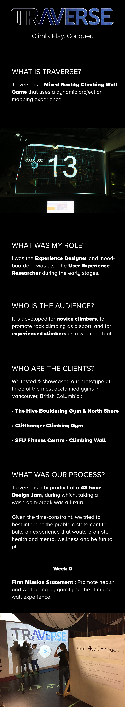
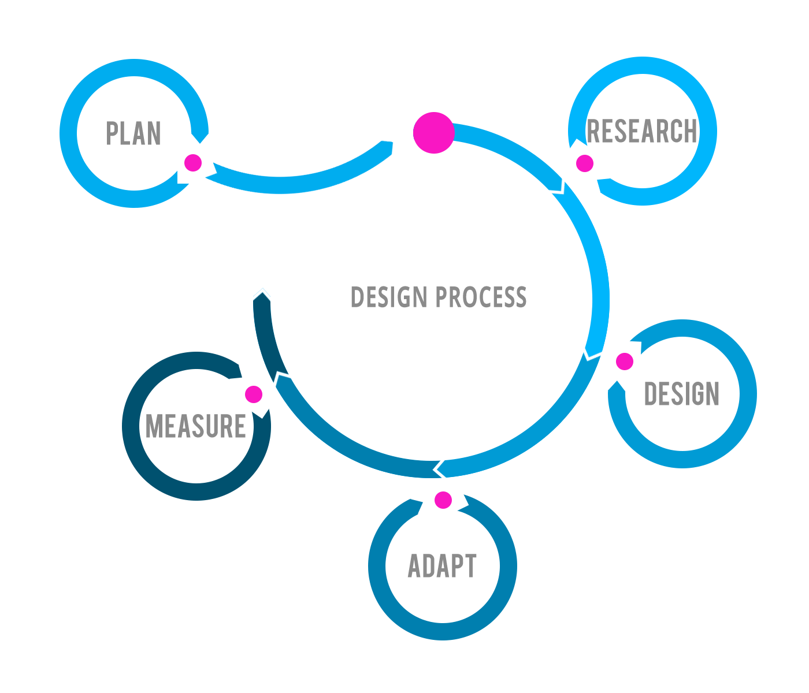
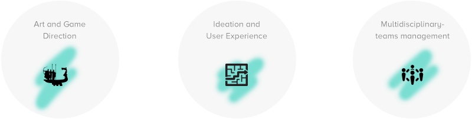
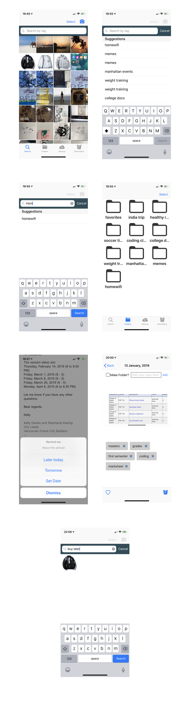
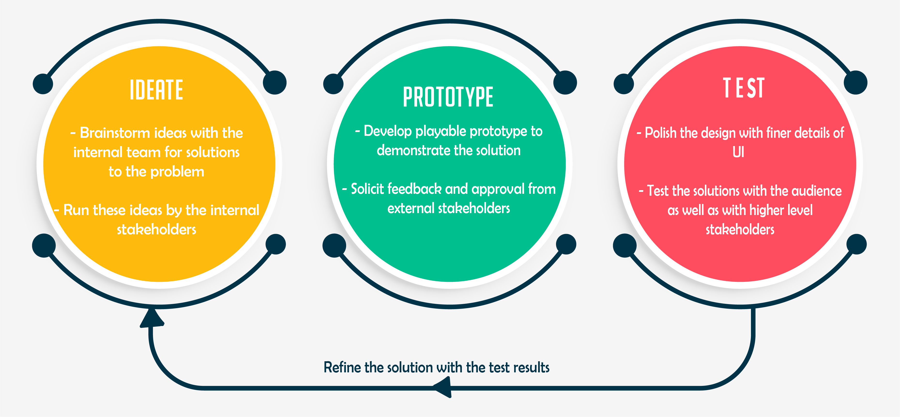
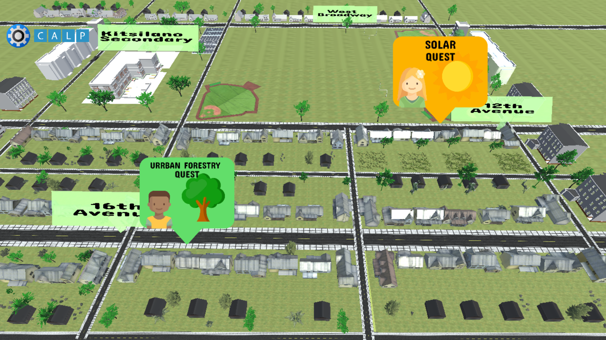
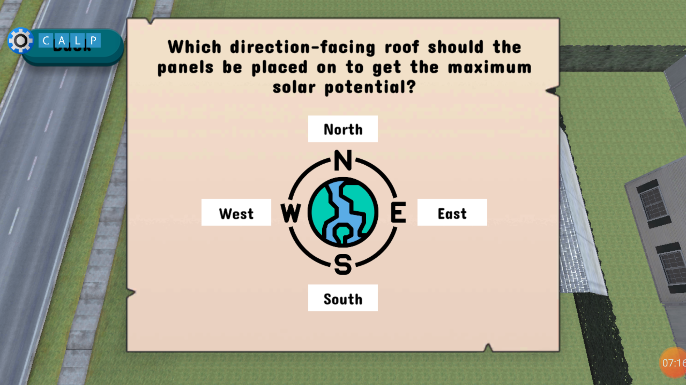

-
Magma
Magma is a top-down 2.5D single player, stealth game where the protagonist plays as a dinosaur and has to save his/her village from Magma-enemies by diverting their attention and cleverly making his/her moves to open all the gates for the magma to pass through.
After play testing with over sixty users, we realised that our game was the most suitable for kids of the age 6-8 years old.
From design document to digital prototype, I was responsible for the game design of this project and conducted five play tests, paving a more precise direction for our game. Rapid paper and digital prototyping refined most of our game design decisions. To test out stealth, we quite simply got testers to play a game of hide and seek with us, to learn the different ducking, sneaking and hiding techniques employed by them.
Some of the feedback we received for our game: “It reminds me of playing hide and seek as a child.”, “I love the whole dinosaur-lava chase.”, “This game is so simple, yet engaging for hours.”.


-
Operation Bastion
Operation Bastion is a 3D, top down, multiplayer, twin-stick shooter, based on Relic Entertainment’s Last Stand gameplay.This project, with Relic, was accomplished through an iterative game design and development process.
The project has been a great success both at the Centre For Digital Media and Relic Entertainment and presented at Show ‘n’ Tell (organised by and at Relic’s HQ).
The endeavor started with laying out the game’s objectives, and the team and I decided to build new mechanics, hitting the core pillars of Last Stand, ergo operation bastion came into being, which is a LAN multi-player RTS styled shooter game designed for the audience that loved and cherished every bit of Last Stand and Company of Heroes. The game would be played within 30 minutes and could be learnt by a non-gamer within a couple of minutes.

Roles & Responsibilities
I was the Interaction designer and producer on this project and was responsible for brainstorming, game conceptualizing, paper and digital prototyping, play testing and tweaking features, managing communication in a more development heavy team, being the point of contact with Relic and enforcing rules of scrum with both the teams.


-
Traverse



Reflections
Traverse helped me exercise Scrum and Agile in more detail, working in close proximity with developers and the importance of pivoting, as that played a major role in making our product usable. As an interaction designer for Mixed Reality; along with user tests, interviews with gym owners and climbing aficionados, I took up bouldering classes to better inform the final design of Traverse.

-
-
ZaZoo
Context: ZaZoo and the Fugees is an initiative co-founded by myself. My team and I set out to prototype our first augmented reality iOS app, soon after the inception of ZaZoo, an animated web series for kids in Bombay, India, owned by BizzyBaby Media.
What is ZaZoo and the Fugees?
It is an Augmented Reality app comprised of mini games, where the web series' protagonist and the alien friend discover new things to learn together, such as nursery rhymes and so on.
What was my role?
Since I was the Lead designer, I worked on the interaction design to build out the AR prototype of the game. I did so using Unity3D.
Who is the audience?
The game is designed for kids of the age 4-7 years old as they fall under the category of the viewers of Zazoo web series. They are the most receptive to the mini games through which kids learn sequences, associate sound patterns as well as are of the age to handle a tablet with simple interactions.
Who is the client?
During the design of the game, BizzyBaby Media Inc., in Bombay, India, was the client.
What was our process?
With two primary constraints, we began our prototyping process. These constraints were:
1. The higher-level business strategy was to release multiple mini AR games rather than one AR game to keep the viewers engaged after the web series episodes.
2. The entire app branding and character design would be in accordance with the parent web series.
A scarily big assumption we continuously worked to validate was whether our target age-group would know how to work the AR app, intuitively.
Empathy
I observed my nephews, nieces, younger cousins and friends’ kids. [Yes, that makes me feel old].
Observations:
1. Kids loved watching animated TV shows and usually got attached to the characters in them.
2. Parents loved feeding their kids while they watched these shows so that they would be more likely to stay in one place and be hooked enough to eat their meals.
3. When kids were hummed nursery rhymes to, they would laugh due to the familiarity of it or sometimes sing along, showing they had formed a bond with the music as well as lyrics.
4. Kids were fearlessly clicking on touch screens expecting some feedback from their favourite characters.
Define
The Problem:
Kids who were exposed to content on the web wanted to interact with their favourite characters / see them come to life but there was no way yet for ZaZoo to do so.
The Solution:
Having concluded that kids learnt faster visually and wanted to interact actively with screens, an Augmented Reality experience where kids developed cognitive abilities like sequence identification and pairing, through nursery rhymes and their favourite characters, Za and Zoo would be built.
Ideate
Where's Waldo / Za?
Kids would hold the tablet in their hand and instead of Waldo, they’d look for Za, the protagonist from Zazoo. The world would be filled with subtly different Zas and once found a match, kids would hear a success sound, ting to know they’ve matched the correct Za. All this while moving the tablet around in the air to scan through their immediate environment for all these live characters.
Twinkle Twinkle Lil Za
Augment stars that play a rhythm as kids sway their tablets left to right. Encourage kids to match the pieces of the tune, embedded in different stars, correctly.
Prototype
Where’s Waldo
Using ARKit’s capabilities and Unity3D, we stitched up a prototype where kids look around with their tablet to see objects that spawned randomly. Upon identifying/clicking on the right object they would hear a success sound, whereas the wrong ones yielded a failure sound.
The goal was for kids to visually find a match for their favourite character while also associating sounds with their correct intonations.
Test
I tested this app on two of my lovely nephews who identified the wrong Za amongst a myriad of different Zas and expected a finish to the game.
How might I encourage the kids to keep looking till they find a perfect Za match?
I came up with a few ideas for the kids to retry but there felt a disconnect and we were quick to notice that and move onto our next idea - Twinkle Twinkle Lil Za.
Prototype
Twinkle Twinkle Lil Za
Using ARKit, Unity3D we augmented stars in the background that opened their eyes once they were activated as they came into the camera view. Each star was attached to a tune and when activated in the right sequence, would yield success.
The goal was for kids to compose the correct nursery rhyme sequence by activating stars.
Test
Testing on a completely new set of kids this time, led to interesting results:
1. Kids associated opening eyes, with activating something.
2. Sounds alongside visuals allowed for connections to be made in their minds.
3. Kids listen to rhythms / melodies / sounds very intently and can communicate their familiarity of it.
4. Repeating sequences (sounds, in this case) reinforces learning, which is an integral element to how kids learn.
Iterate
To make our interactions smoother, we added visual feedback from the system, for example - the stars would smile/pout as if actually singing.
The usage of bright colours spoke to our target audience more.
Additionally, we first played the rhythm before kids performed the matching in AR. This was a sound signifier of ‘the task’ that kids needed to perform.
Test
Will I fail my cousins this time? :(
Fortunately, I didn't.
I passed the test. We attached twinkle twinkle little star to the background GameObject with stars spawning randomly in the beginning.
The tune then stopped and played again as each star was activated by swaying the tablet around the house.
Kids were quick to match the correct sequence after 1-2 trials.
Through further polishing, we were able to make the progressions in the mini games engaging and in tune with Za and Zoo branding as well as aesthetic.
Reflections :
These are my personal reflections and don’t represent the entire team’s reflections:
1. The behaviour of 3 year olds vs 4-7 year olds vs 7-12 year olds is very different so narrowing the target audience for the product here was very important.
2. Kids will embrace intuitive design, toss away frustrating design, quicker than any other target audience.
3. Kids attention span is directly proportional to their attachment to shows/characters/colours/sounds.
-
F.A.L.C.O.N
Falcon is a 3D, couch co-op, twin-stick, vehicle-based shooter, created with Blackbird Interactive.We decided to opt for a couch co-op as it brings out the social aspect of playing together, allowing players to work as a team and give way for co-operative maneuvers like boosting teammates up during combat and providing cover for their partner. A vehicle-based gameplay was chosen because that is Blackbird’s forte.
Roles -
1. 3D Interaction Designer:
• Collaborated and communicated face-to-face on small, cross-discipline teams, namely, art, development, sound and with co-designers.
• Enforced co-operativity in the game by linking the power cores of the two players (vehicles) together with a narrative supported feature. The viewport of both the players would be constrained to one screen and their bodies would explode if they went too far from each other. Hence, enforcing co-op dynamics.
2. Level Designer:
• Laying out the level from flowchart to final playable prototype in Unreal Engine
Obediently listening to player's feedback
• Using an existing game, "Little Big Planet 2" for rapid prototyping to test the level and the co-op dynamics between play testers.
3. Producer:
• I made sure the art team was always involved in design and development decisions and vice-versa.
• Switching from designer to producer hat was quite interesting in terms of features that would stay or frag.
• Falcon was pitched by me at PvP (Pitch Vs Pitch) Game Circuit in July 2018, at Blackbird Interactive Studio.
-
Relapsis
‘Relapsis’ is a Virtual Reality transmedia story-telling experience based on a dystopic world, set in the year 2080. Artificially intelligent robots have taken over the world and there is a sickness/disease spreading all over. Relapsis was created as a free exploration world for the user, which takes them on a quest to solve a murder mystery, role-playing as a police officer/detective; from the physical world to the web terminal, thereon to a virtual world and back to physical reality.
Roles and Responsibilities:
On this project, I was wearing several hats, such as:
Production Manager –
Responsibilities:
Planning sprints
Maintaining Trello board
Conducting daily stand ups
Following up on art and design and combining with development work.
Conceptualization to Delivery – all the experiences were separately designed – physical, virtual and web. There are puzzles in both physical and virtual worlds. I had to wear two hats at once, viz., Designer and Production Manager and taking decisions on features like various puzzles, was difficult but achieved through Agile tools, like Bull’s eye and a supportive team.
Puzzle Designer –
Suspension of disbelief was needed to be achieved through planning each puzzle as if a simulation of the real-world mystery solving case.
The flow of the police officer’s (user) interaction was made seamless by adding a cue at the end of each puzzle that hinted the user to interact with a different world, for eg., When he/she interacted with the web-terminal to check their messages, they were directed to check the criminal reports, in the real world, which further led to findings and hinted them to put on their VR headsets and immerse into a conversation between the A.I. Robot and a doctor trying to work on a cure for the disease that is spreading.
The puzzles led to immersing the user into putting together the pieces of the puzzle and solving the mystery to spot the criminal behind an infamous murder.
Director of Interaction –
I was responsible for script writing and directing the video call with the police officer’s boss when the he/she is seated in a futuristic automobile which takes flight as soon as the officer(user) puts on the headsets. The video had to be succinct in providing the user with information about their task while immersing them into the role of a police offer/detective, also, introducing them to the aesthetic of the outside reality (virtual), which is a dystopian, cyber punk world with a blade runner aesthetic, based in Neo Bangalore, India.

-
WezRds Rush
View case study on Behance
Context:
WeRVR is a VR studio initiative co-founded by myself. With a multi-disciplinary team of 4, we set out to prototype our first game - WezRds Rush.
What is WezRds Rush?
WezRds Rush is a Virtual Reality, first person, tower defence game, where you play as the King who embodies a giant Wizard in order to protect your castle from enemy invasion.
What was my role?
Since it was a small team, I wore many hats. My contributions encompassed these domains:

Who is the audience?
The game is designed for young adults who enjoy playing hack-n-slash games. This demographic comprises of people who enjoy storytelling experiences as well as newer technologies, like Virtual, Augmented and Mixed Realities.
Who is the client?
During the design of the game, my application to the Oculus Start Program was acepted and therefore, Oculus @ Facebook became our first client.
What was our process?
The game takes inspiration from an older iOS version called Knights Rush and WezRds Rush was an attempt to translate mechanics from the mobile game to Virtual Reality.
Week 0 Goal: Prototype ‘flinging’ mechanic as quickly as possible.
I gathered 5 users, to prototype flinging using rubber balls. They were asked to throw balls that were rolled in front of them, more than one at a time.
Observations :
Users had to bend their necks for a long time to fling those many balls. Each one of them complained about their arms getting tired, yet we fed them pizzas after :p .
Week 1 Goal: Prototype ‘flinging’ mechanic with arms bent at 90 degree.
Observations :
The same group of users found it more comfortable to fling the same number of balls from a bent arm.
Week 2 Goal: Set up a unity project using VRTK (Virtual Reality Tool Kit).
Observations :
VRTK is a great tool to get started with Virtual Reality prototype building in Unity3D. Of course, we evaluated OpenVR and SteamVR too.
Week 3 Goal: Prototyping basic interactions with grey boxed Unity scene.
Workflow :
Using a simple 3D model for a castle tower, tree assets as well as coloured spheres, we were able to get a scene up and running.
I tested the position of the tower and iterated upon it, till I was certain I didn’t have to bend my neck to interact with enemies.
Week 4 Goal: Set up a base architecture for code and set up camera for first person.
Workflow :
A modular code structure was set up as we knew we wanted to build on the game using elements we had prototyped with.
The camera was tested by me over and over again, especially to eliminate having to look down for long periods of time to interact with enemies.
Week 5 Goal: Make enemies move towards you, the player.
Workflow :
Much balancing, such wow. I spent hours tweaking the speed with which enemies moved towards the player, as well as the number of enemies that were being spawned. The goal was to have enemies that were rolling in your direction.
Week 6 Goal: Make enemies interactive.
Workflow :
Each enemy gameObject was given an OnTrigger property and using the left and right controllers laser pointers could be shot at the spheres to select them.
Week 7 Goal: Test interactivity of the enemies.
Observations :
Enemy spheres started colliding with each other while rolling which disrupted the OnTrigger interaction. We had to set a NavMesh for each enemy so that it would have a set path to roll towards you (castle).
Week 8 Goal: Test interactivity of enemies.
Observations :
If the right controller shot a laser point at one enemy, the left couldn’t at the same time. We were frustrated, let alone, users.
Week 9 Goal: Fix Oculus controllers interaction.
Observations :
If the right controller shot a laser point at one enemy, the left couldn’t at the same time. We were frustrated, let alone, users.
Week 10 Goal: Test, Test, Test.
Workflow :
Since, the delivery of the prototype was due in 2 weeks to Oculus, I started reaching out to the community and made many business connections, namely, VRAR Association Vancouver, Mythical City Games as well as IndiePod who had previous experience with VR, Oculus Headsets as well as Oculus Start Program application.
With some useful tips from community forums as well as having showcased our product at the Full-Indie held at the Centre For Digital Media on October 23rd 2018, we were in good shape for Oculus delivery.
Week 11 Goal: Polish prototype with basic UI and any nice-to-haves.
Workflow :
In the initial weeks, our testing process had informed us that the must-haves would be essential for the prototype delivery and the nice-to-haves needed prioritization. I used red routing to identify which features were vital to our product based on user feedback.
I performed a Red Route exercise, which allowed me to prioritse our backlog and work towards building the MVP (Minimum Viable Product) as soon as possible. The features in bright red are the ones with most importance as they are used by the players most often and are what really constitute the game. The other features were pushed down in the priority list of features to implement.
Through this exercise, we were able to narrow-in on our product.
Week 12 Goal: Test the build, get art in place for submission requirements and press SEND!
Observations :
It wasn’t all smooth-sailing but we made it. Below is some of the art we used to submit our prototype.
Reflections :
• Communication between Art, Design and Development teams is key to success.
• Prototyping cheaply and efficiently at every stage helps steer ship in the right direction.
• Reach out to communities earlier for feedback, thoughts, coffee, all of that good stuff.
• Having led a team of 3, and being the only woman, I feel strong and motivated to be in leadership roles.
-
Eidetic
Problem:
Important photos get lost amongst other not-so-important ones. People did not have a way to retrieve their old photos quickly.
What is Eidetic?
Eidetic is an iOS mobile application that allows photos to be retrieved by the user through a meaningful word that they can recall at a later date.
What was my role?
I was the user experience designer for Eidetic and also the product owner. I collaborated with a software developer, to build the application.
Who is the audience?
The application is designed for a broader audience in that most smartphone users today would find value with this solution.
What was my process?
User Persona

User Journey
Samir goes to Machine Learning class and while listening in on the lecture, finds the flowchart slide rather important for an upcoming test. He takes a picture and opens Eidetic. He selects the picture he took and creates a new folder, named, "Machine learning notes". As the class proceeds, the professor provides references to study from in the slides. Samir takes another picture and swiftly adds it to the folder already created.
After class, he goes to radio station to host his show. For the upcoming events announcement, he pulls open the Eidetic app and searches for 'Events' tag that he previously created. All the posters he had captured are retrieved and he announces about these events on his show.
User Stories
- As a user, I want to save photos with a meaningful name so that I can find them at a later date.
- As a user, I want to search photos with names that I added as tags to the photos so that I can retrieve the photos with quickly.
- As a user, I want to organize photos in folders names that I can add custom names to so that I can find all related photos in one folder.
- As a user, I want to schedule an event based on information in posterrs about the event date and time so that I can be reminded about it before the event.
Hi-fidelity Wireframes
Based on the user stories, I quickly iterated on wireframes to get them a high fidelity state, with constant feedback from the developer. For the UI, I referred to Apple's Human Interface Guidelines.

Hi-fidelity Wireframes
With these wireframes, the developer was good to get started in Xcode. Using Xcode's simulator view, I tested the application's progress.
The next clean up of UI came with changes in the visual theme of Eidetic, as I wanted to keep it clean and simple, so it gave the user a feeling of 'organising' or 'cleanliness' which is also the intended use of the application.
Final UI


-
Our Future Community (OFC)
Overview
Our Future Community is a 3D Interactive video game that aims to increase awareness about alternate sources of energy in an attempt to combat climate change. The game would ideally be played in a classroom setting, by high school students in grades 10-12th in British Columbia, Canada.
My Role
Senior Game Designer and Developer
Responsibilities
• Lead a team of game designers and developers to build quests for the game.
• Run design sprints in order to discard the worst solutions and prototype ideas to test them with high schoolers.
• Present prototypes to external stakeholders to achieve alignment from a large team of builders.
• Conduct daily stand ups and maintain a trello board for tasks.
• Create a foundation for a living Game Design Document, highlighting:
-> Pillars
-> Mechanics
-> Aesthetics
-> Dynamics
End users
The game is designed for high school students in British Columbia (Vancouver and Delta), Canada. The game is expected to be played in a classroom, and optionally non-classroom, setting. The primary platform for the game would be mobile (Android) but a desktop version will be available for classrooms that don’t allow mobile phones.
Client
Two types of clients:
• High schools --> For example, Kitsilano High School students have interacted with this game and the teachers have shown a high interest in using this tool to educate students on climate change.
• Vancouver School Board --> Distributer in Vancouver, BC schools that agree to teach climate change in classrooms. VSB played a part in laying constraints, in terms of the content as well as length of the gameplay.
Design Process

Game characters keep their points of view about fighting climate change forward. Each character leads the player through one quest, which essentially reveals a solution for climate change.
Game Flow
Designing the game flow

Quests
1. Solar Quest
Pre-quest
Player is given context about why they’re placing solar panels on roofs of homes in Vancouver, BC. Through a trial-and-error learning scenario, players deduce the correct direction of roofs for placing solar panels.

Solar Quest gameplay
Player chooses a house on a block, a N,S,E,W facing roof and places solar panels to witness an increase in energy generated. *The dollar cost of solar panels is kept realistic to give players a sense of the budget.
Player repeats this action sequence for 3 houses on the block to obtain a score of potential energy on that block.
Mobile Interactions
2. Urban Forestry Quest
Quest gameplay
3. Waste Management Quest
An early prototype developed using Unity3D demonstrates the idea of proper waste disposal and segregation. A waste truck on a timer, arrives at your home and your job is to segregate the waste in the right bins and load them in the truck before the timer runs out. Players would be given some context on the waste items and their proper disposal before they jump into the gameplay. Many such quick prototypes were developed to pitch ideas for different quests to external stakeholders.
Game Design Document overview (GDD)
 Operation Bastion
Operation Bastion Magma
Magma